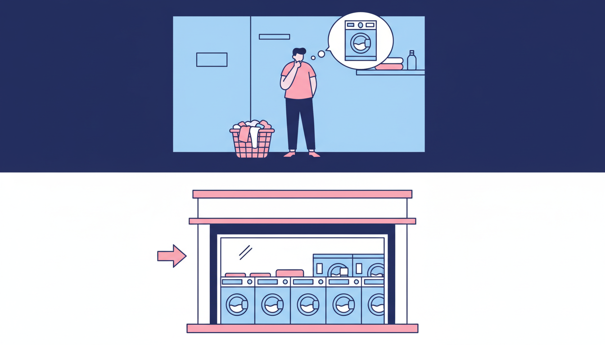

Melbourne is a city of apartments. From converted warehouses in Collingwood to high-rise towers in the CBD, more Melburnians than ever are living in units and flats. And one of the most common trade-offs? No space for a washing machine. If that sounds familiar, you're far from alone — and it's absolutely manageable once you find a system that works.
The Reality of Apartment Laundry in Melbourne
Many Melbourne apartments, particularly older builds and smaller studios, simply weren't designed with in-unit laundry in mind. Even newer apartments in inner suburbs like Brunswick and Footscray often sacrifice laundry space to maximise living area. It's a design choice that developers make, and renters live with. For some residents, this means relying on a shared laundry room in the building. For others, it means figuring out an entirely external solution.
Shared Laundry Rooms: The Frustration Factor
If your building has a shared laundry, you already know the drill. There are never enough machines for the number of residents. Someone always leaves their wet clothes sitting in the washer for hours. The dryers are often underpowered, coin-operated, and overpriced. Peak times mean waiting for a free machine or hauling your basket back upstairs and trying again later.
Hand Washing: A Stopgap, Not a Solution
Some apartment dwellers try hand washing smaller items in the bathroom sink. This works for a few delicates, but it's not realistic for your full laundry load. Hand washing is time-consuming and nearly impossible for heavier items like jeans, towels, or bedding. Damp clothes hanging around a small apartment also create humidity and musty smells.
Why a Nearby Laundromat Is the Best Solution
For apartment dwellers without a machine, a good self-service laundromat is the most practical option. Here's why:
You can do everything at once. A laundromat lets you use multiple washers and dryers simultaneously. A full week's laundry can be washed and dried in about an hour — actually faster than most people manage with a home machine.
The machines are commercial grade. They clean more thoroughly, extract more water during the spin cycle, and dry at higher efficiency. Your clothes come out properly clean and completely dry every time.
You get your time back. Load your machines, tap to pay, then grab a coffee or run an errand while you wait.
Time Management Tips
Pick a regular day. Choose a consistent day each week and stick to it. When laundry is a scheduled task, it never becomes an overwhelming pile.
Sort at home before you go. Separate lights, darks, and towels into different bags. This saves time and lets you load multiple machines the moment you arrive.
Use a wheeled laundry bag. If you're walking, a wheeled bag makes the trip much easier than juggling an overstuffed basket.
What to Look for in a Laundromat
Not all laundromats are equal. Look for modern machines that clean well and spin fast. Choose somewhere with card payment so you're not hunting for coins. The space should be clean and well-lit. And ideally, it should be close to home — the easier the trip, the more likely you'll stick to your routine.
Laundry Day: Built for Apartment Dwellers
At Laundry Day, we designed our laundromats with exactly this kind of customer in mind. Every wash includes free detergent, so there's one less thing to carry. We accept card and contactless payments with zero surcharges. Our machines range from 14KG for regular loads up to 27KG for bulky items like doonas and blankets. And our spaces are clean, bright, and welcoming.
We have three Melbourne locations — Brunswick East, St Albans, and Maribyrnong — all in areas with high concentrations of apartment living. Pop in and see how easy laundry can be when the machines are modern, the space is clean, and the whole process just works.
Living without a washing machine doesn't have to be a hassle. With the right laundromat and a simple weekly routine, it's one of the more straightforward parts of apartment life.
No Machine? No Problem.
Laundry Day makes apartment laundry simple. Modern machines, free detergent, and zero card fees at all three Melbourne locations.
Find Your Nearest Location